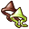
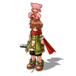
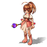
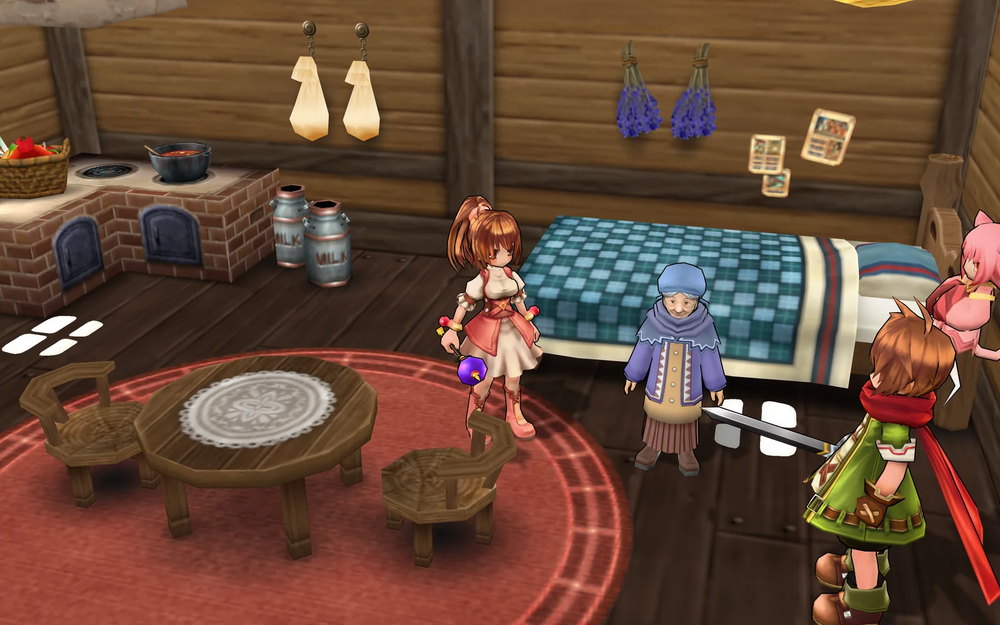
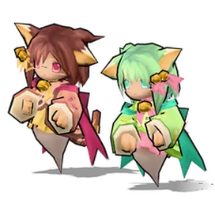
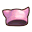

Catty (Kurumi Wakana) Quest
Save your lost body from a cave of souls.
- Level
- 30 or higher, with 20 Fame
- Reward

Catty (Kurumi Wakana)
Before you start
- Finish the Catty (Momo) Quest and equip a Catty for the whole quest.
Walkthrough
1. Masha's Flying Garden
-
Wear your Catty and talk to the Seamstress in Uptown.
-
Leave her house. Choose to go to Masha's Airship.
-
Talk to Emil and Marsha. They take you into the Old House.

Emil
Marsha
 Seamstress
Seamstress

2. The old house
-
Talk to Marsha and choose to catch it. You get the Twin Triangle Bandana, two bandanas in one item.

-
Talk to Marsha again. You black out and wake up as Catty (Kurumi Wakana). Your body stays on the floor.
- You are sent back to the Seamstress' House. Talk to her.
3. Ask for help
-
Go to Tiny Island and talk to Lakeside Tita. Then go back to the Seamstress.
-
The Seamstress lets you go back to Masha's Airship. Talk to Marsha there. She sends you back to the Seamstress' House.
- Go back to Tiny Island and talk to Lakeside Tita again. She sends you to Cave of Wandering Souls.
 Lakeside Tita
Lakeside Tita
4. Find your body
- Go deep into the cave and find the NPC that looks like you. That is your body. Talk to it.
-
To get your body back you play three minigames and collect Pieces. The Event Navigation points you to your body in two spots:
-
The minigames include a maze (walk it in an S shape) and a matching game.
5. The boss
- In the cave there are six orbs. Enter the middle one and talk to your body. A boss appears.
- The boss has about 7,000 HP and casts Black Hole when it is almost dead.
- If your HP gets low, run until it stops chasing you, then rest. Put an untrained Catty away so the boss's magic doesn't hit it.
6. Back to your body
- After the fight, go back out through the same orb. Talk to your body and give it the three Pieces.
-
You are taken to Masha's Airship. Talk to Marsha, Emil and your body. You go back into your body and receive Catty (Kurumi Wakana).
-
Talk to the Seamstress and choose Kurumi or Wakana. You get that twin's Catty Hat and Catty Bell.
Rewards

| Reward | Notes |
|---|---|
| Catty (Kurumi Wakana) | Two Catties in one |
| If you choose Kurumi | |
 Catty Hat (Wakana) and |
If you choose Wakana |
Good to know
- Two Catties for one slot. Equip Catty (Kurumi Wakana) once and both twins come out.
- Look for "Catty Kurumi Wa…" in the Event Navigation. The name is cut off in the list.